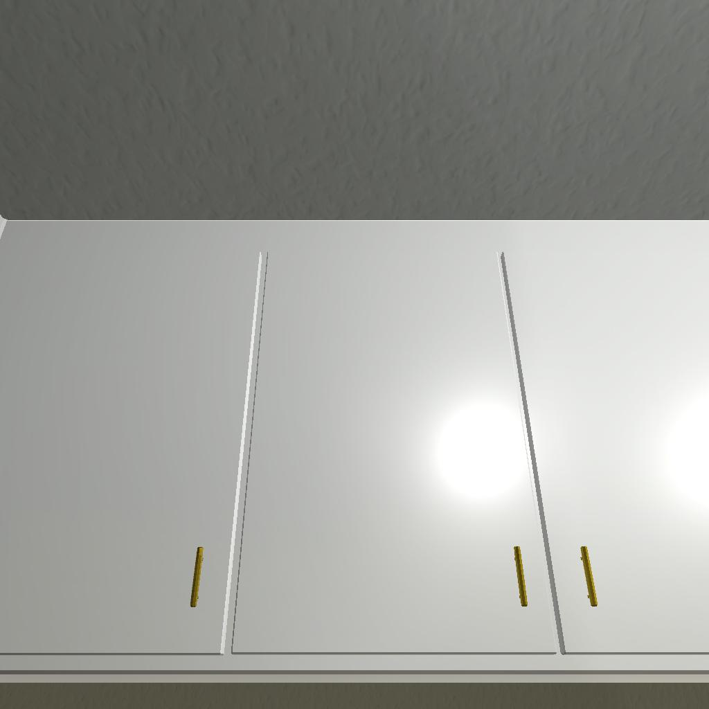

---------------------------------------------------------task: 18---------------------------------------------------------
--------------------------------------------------------------------------------------------------------------------------------------------------------------------
--------------------------------------------------------------------------------------------------------------------------------------------------------------------
Step:--------------------------------------------------------------------------13-------------------------------------------------------------------------------
----------------------------------------
VLM Prompt:
Image1:
Image2:
**Instruction**
1. Analyze the provided images to identify all visible household objects and compare the difference between images (e.h. whether the object is opened or not and taken on hand or not), focusing on those relevant to the task description "put a cool pot in cabinet."
2. Use the analysis of images and the task hint "The agent must find an object of the desired type, pick it up, go to a fridge, cool the object with the fridge, then find the correct location to place it, and put it down there. The agent does not need to use the fridge button or open the fridge to cool the object, and the agent just needs to do action that is "cool the object with the fridge"." to answer the question: what is the most reasonable action in the choices for the task description "put a cool pot in cabinet"?
3. Decide and write the answer using the template: The answer is: (i): , where i is the real number. If there is no desired object in images, search every place based on **Initial Observation** to find the object. And if no one is exactly correct, choose a similar answer.
**Initial Observation**
You are in the middle of a room. Looking quickly around you, you can see cabinet (1-20), countertop (1-3), coffeemachine (1), toaster (1), sink (1), fridge (1), microwave (1), garbagecan (1), drawer (1-3), sinkbasin (1), stoveburner (1-4), shelf (1-3)
**Answer Choices**
(1): go to cabinet 1
(2): go to cabinet 3
(3): go to cabinet 4
(4): go to cabinet 6
(5): go to countertop 1
(6): go to coffeemachine 1
(7): go to cabinet 7
(8): go to toaster 1
(9): go to cabinet 8
(10): go to sink 1
(11): go to microwave 1
(12): go to garbagecan 1
(13): go to cabinet 9
(14): go to cabinet 10
(15): go to countertop 2
(16): go to cabinet 11
(17): go to cabinet 12
(18): go to drawer 1
(19): go to countertop 3
(20): go to drawer 2
(21): go to cabinet 13
(22): go to sinkbasin 1
(23): go to cabinet 14
(24): go to drawer 3
(25): go to stoveburner 1
(26): go to stoveburner 2
(27): go to stoveburner 3
(28): go to cabinet 15
(29): go to stoveburner 4
(30): go to cabinet 16
(31): go to cabinet 17
(32): go to cabinet 18
(33): go to cabinet 19
(34): go to cabinet 20
(35): go to shelf 1
(36): go to shelf 2
(37): go to shelf 3
(38): open fridge 1
(39): close fridge 1
(40): examine fridge 1
**Answer**
Let's think step by step by following the instructions.
----------------------------------------
----------------------------------------
Original Response:
Image Analysis:
- Image 1 shows a closed white cabinet with golden handles. There is no visible pot or object in hand.
- Image 2 shows a red object that appears to be a microwave next to a brown marble countertop and a grey fridge.
Task Description Analysis:
The task is to "put a cool pot in cabinet." This means the agent needs to find a pot, cool it with the fridge, and then place it in a cabinet.
Based on the Initial Observation, there are multiple cabinets, countertops, and other household objects. The fridge is mentioned, which is essential for cooling the pot.
Given the task hint, we know that the agent does not need to use the fridge button or open the fridge to cool the object. They simply need to do an action that is "cool the object with the fridge."
Most Reasonable Action:
Based on the images and task description, the agent first needs to find a pot to cool. None of the answer choices directly involve finding a pot, so the agent should search every place based on the Initial Observation to find the object. Since the images do not show a pot, we should choose an action that involves searching for the pot.
The answer is: (1): go to cabinet 1. This choice is reasonable as the agent should start searching the cabinets for a pot, and cabinet 1 seems to be a logical starting point. If the pot is not in cabinet 1, the agent can move on to search the rest of the cabinets and other locations mentioned in the Initial Observation.
----------------------------------------
----------------------------------------
>>> Refine Original VLM Response and Get Pure Action: go to cabinet 1
----------------------------------------
-----------------------------------------------------------------
Running time: 18.609678268432617 seconds
Total Money: 8.991600000000004
-----------------------------------------------------------------
-----------------------------------------------------------------
Text Observation:You arrive at loc 0. The cabinet 1 is closed.
-----------------------------------------------------------------
UNSUCCEED